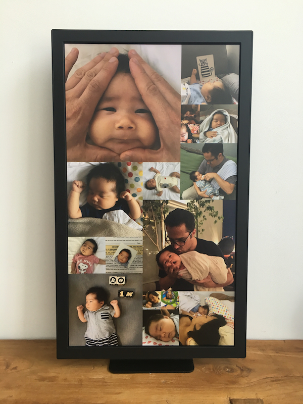

A few months ago my partner and I welcomed a pudgy baby boy named Ko into our lives. Since then it’s been amazing to see the small changes in him day by day, like when he discovered his hands, or learned how to smile. So I’ve found myself taking out my phone a lot more often, to capture as many of these moments as I can.
And of course the demands from my parents for pictures of their new grandson have been fierce. Ordinarily I’d post things like this on Facebook, but having been on the receiving end of oversharing parents there for a while now, I wanted something a little less public. Sure, I could deal with Facebook’s ever-changing twiddly permissions UI to make sure photos only went to my parents, but since we were already using iMessage to communicate, I decided to send them pictures there.
This was definitely the path of least resistance, but of course, the iMessage UI isn’t really a great way to get a snapshot of someone’s most recent pictures. So I decided to get creative, and turn my Electric Objects Digital Art Display into a collaborative family photo frame, so that my parents could see new pictures show up in their kitchen, in real time. I’ve used digital picture frames like Ceiva in the past, and they’re okay, but nothing matches the sleek finish of the Electric Objects display, or the ability to control how images are loaded and displayed.

Having seen a bunch of great SMS/MMS demos from Ricky Robinett at BrooklynJS, I figured Twilio would be an easy way to pull all of the photos out of our existing iMessage group and put them on the display. So I created an app that uses AWS to glue Twilio and Electric Objects together, and put the source code on GitHub. Here’s how the whole thing works:
From my phone to their display, the whole process takes about 15 seconds, a nice side effect of which is I get a backup of all the photos in an S3 bucket.
In this post, I’m going to show you how to create your own collaborative family photo frame. All you need to follow along is:
Once you’ve got those sorted, now you’ll just need to:
If you’re stuck trying to get your frame set up, please feel free to ask me for help in the comments!